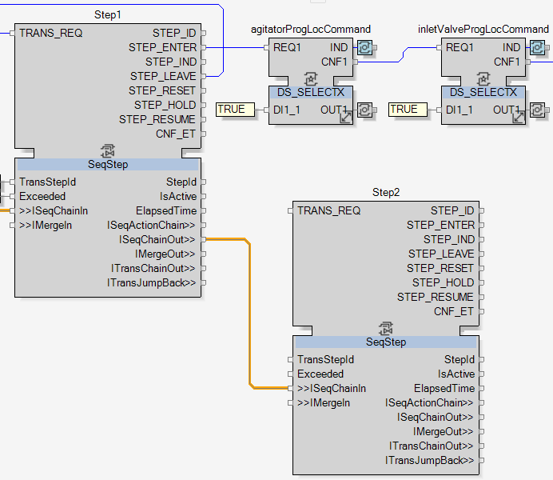
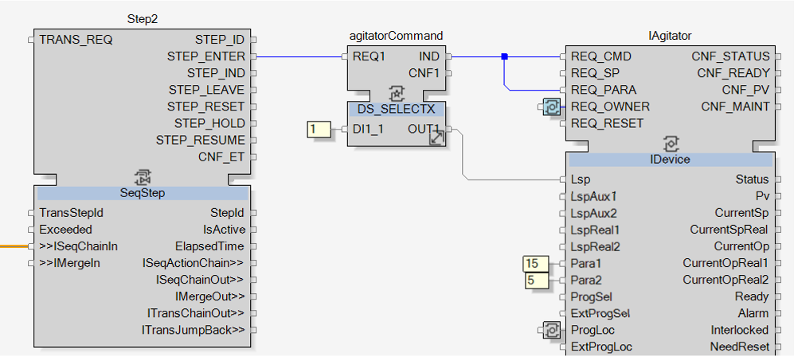
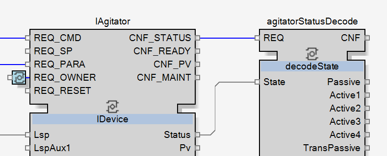
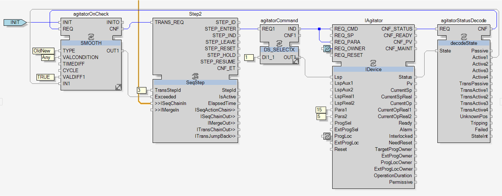

Turning ON the Agitator Step

|
NOTE:
As defined in the topic Filling Sequence Definition, in this step is set up and turned ON the agitator. |
To start the development, add a new SeqStep function block, name it Step2 and link Step1.ISeqChainOut to Step2.ISeqChainIn.

As defined in the topic Filling Sequence Definition, this step shall turn ON the agitator TR1M01 and define its cycle time:
To turn ON the agitator:
Like in the Take Ownership Step topic, a DS_SELECTX function block will be used to send the ON value to the IAgitator when Step2 is activated.
-
Add it and name it agitatorCommand.
-
Change the type value of its variable to INT and add the constant 1 to DI1_1.
-
Link Step2.STEP_ENTER to agitatorCommand.REQ1, so the function block is triggered when the step2 is entered.
-
Link agitatorCommand.IND to IAgitator.REQ_CMD and agitatorCommand.OUT1 to IAgitator.Lsp, so the ON command is transmitted and the command event is triggered.
To define the cycle time:
As defined in the topic Filling Sequence Definition, the cycle time is defined as follows: 15s ON and 5s OFF.
-
Add the constants 15 to IAgitator.Para1 and 5 to IAgitator.Para2.
NOTE: When the IDevice adapter is connecting with a cyclic motor, then the variable Para1 is related to the ON time value and the variable Para2 to the OFF time of the cycle.
The purpose of these parameters changes depending on which instrument the adapter is connected to.
-
Link agitatorCommand.IND to IAgitator.REQ_PARA to send the two parameters to the agitator.


|
The action of turning ON the agitator is now done. To complete this second step, the transition condition has to be developed. |
As defined in the topic Filling Sequence Definition, the transition condition of this second step is to wait until the agitator is turned ON.
To know if the agitator is ON or not, then its status need to be checked. Like done with the pasteurizer valve, a decodeState function block will be needed to check the agitator status:
-
Add a decodeState function block and name it agitatorStatusDecode.
-
Link IAgitator.CNF_STATUS to agitatorStatusDecode.REQ and IAgitator.Status to agitatorStatusDecode.State.

|
|
Now that the state is decoded, its value has to be checked and detected when the agitator status switches from OFF to ON. |
To detect this transition, a SMOOTH function block will be used.

|
In the Getting Started application, all the SMOOTH function blocks will be used the same way. They compare the current and previous values of the input. As soon as the value changes, so when the current and previous values are not equal anymore, they will transmit the new input value to the output and the related event will be fired.
The SMOOTH function blocks then won’t fire event until the value of the input variable changes. This avoids the SeqStep.TRANS_REQ event to be triggered several times with the Exceeded variable TRUE. Hence, it makes sure that the transition is executed only once. |
In this case, the SMOOTH function block will detect when the agitator status switches from OFF to ON and then transmits ON to Step2.
-
Add a SMOOTH function block and name it agitatorOnCheck.
-
Change the IN1 type from ANY to BOOL.
-
Link INIT input event to agitatorOnCheck.INIT. This will initialize the function block and make it start watching the input value.
-
Link agitatorStatusDecode.CNF to agitatorOnCheck.REQ and agitatorStatusDecode.Active1 to agitatorOnCheck.IN1, to transmit the decoded value to the checker.
-
Add the following constants to agitatorOnCheck variables:
Variable Constant Value TYPE OldNew VALCONDITION Any VALDIFF1 TRUE TIMEDIFF Keep empty CYCLE Keep empty -
Link agitatorOnCheck.CNF to Step2.TRANS_REQ, agitatorOnCheck.OUT1 to Step2.Exceeded and add the constant 3 to Step2.TransStepId.

|
|
The development of the second step is now completed.
Cross reference the links between agitatorCommand and IAgitator, between agitatorStatusDecode and agitatorOnCheck and move to the next step. |